1과목: 수처리공정
1. 침전지에 관한 설명으로 옳지 않은 것은?
2. 정수처리용 약품에 관한 설명으로 옳지 않은 것은?
3. 표면부하율이 30m3/m2/d인 횡류식 침전지에서 침강속도가 10mm/min인 입자의 이론적 제거율(%)은?
4. 횡류식 침전지의 제거율을 향상시키기 위한 설명으로 옳은 것을 모두 고른 것은?
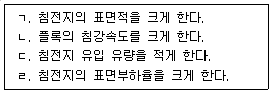
5. 급속여과지에 관한 설명으로 옳지 않은 것은?
6. 여과작용에 관한 설명으로 옳지 않은 것은?
7. 급속여과지에서 세립자의 여과 모래를 사용할수록 나타나는 특징으로 옳은 것은?
8. 여과공정만으로 수도법상 정수처리기준에서 정한 병원성미생물의 최소제거 및 불활성화 기준을 충족하는 여과 방식으로 옳은 것은?
9. 염소가스 저장시설에서 염소가스 누출로 인한 중독을 방지하기 위하여 설치하는 제해설비 중 중화설비에 관한 내용으로 옳지 않은 것은?
10. 수도법령상 정수처리기준을 준수하기 위하여 정수처리된 물의 탁도에 관한 기준으로 옳지 않은 것은?
11. 소독 설비 중 액화염소 저장실에 관한 설명으로 옳지 않은 것은?
12. 수도법령상 소독 공정에서 요구되는 불활성화비를 충족하기 위한 잔류소독제 농도(mg/L)의 최솟값은 얼마인가? (단, CT요구값 = 25, 소독제 접촉시간 = 10분)
13. 수도법령상 일반수도사업자가 병원성 미생물에 의하여 오염되었거나 오염될 우려가 있는 경우에 수도꼭지의 먹는물에서 유지해야 하는 유리잔류염소의 최소농도 (mg/L)는?
14. 수도법령상 정수처리기준에서 정한 병원성미생물로 옳은 것을 모두 고른 것은?
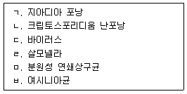
15. 슬러지 처리 공정에 관한 설명으로 옳지 않은 것은?
16. 슬러지 농축조에 관한 설명으로 옳은 것은?
17. 오존 처리에 관한 설명으로 옳지 않은 것은?
18. 자외선 소독 공정에 영향을 미치는 인자로 옳은 것을 모두 고른 것은?
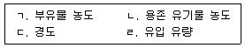
19. 막여과 시설에서 발생하는 막모듈의 비가역적 열화 현상이 아닌 것은?
20. 폭기 처리를 통해 제거할 수 있는 것은?
2과목: 수질분석 및 관리
21. 수질오염공정시험기준상 정도관리에 관한 설명으로 옳은 것은?
22. 수질오염공정시험기준상 금속류-유도결합플라스마-원자발광분광법에서 간섭물질에 관한 설명으로 옳지 않은 것은?
23. 수질오염공정시험기준상 시료의 보존방법 중 4℃에서 보관하였을 때, 최대보존기간이 가장 긴 항목은?
24. 정수처리 공정에서 원수의 응집처리에 관한 설명으로 옳지 않은 것은?
25. 정수시설의 입상활성탄 세척에 관한 설명으로 옳은 것을 모두 고른 것은?
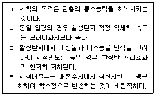
26. 다음은 오존처리의 이용률 산출식이다. ( )에 들어갈 내용은?
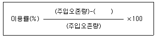
27. 오존처리 공정에서의 잔류오존량(kg/d)은?
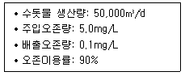
28. 먹는물수질공정시험기준상 냄새 측정에 관한 설명으로 옳지 않은 것은?
29. 정수장의 유량이 10,000m3/d 일 때, 염소제(유효염소 50wt%)를 이용하여 소독 할 경우, 염소제 5mg/L 투입 시 잔류염소 농도는 0.5mg/L가 되었다. 잔류염소 농도를 0.2mg/L로 유지하기 위해 투입해야 하는 염소제의 양(kg/d)은?
30. 먹는물수질공정시험기준상 총대장균군-시험관법에 관한 설명으로 옳은 것을 모두 고른 것은?
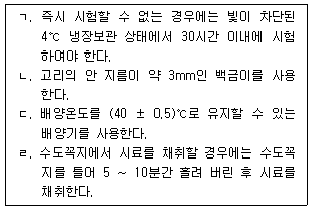
31. 수질오염공정시험기준상 용존 유기탄소-고온연소산화법에 관한 설명으로 옳은 것은?
32. 먹는물수질공정시험기준상 항목별 기기분석법 연결이 옳은 것은?
33. 소독에 의한 불활성화비 계산에 관한 설명으로 옳은 것은?
34. 먹는물 수질감시항목 운영 등에 관한 고시상 상수원에서 ‘조류대발생’ 단계 발령 시원ㆍ정수의 Geosmin, 2-MIB 검사주기로 옳은 것은?
35. 먹는물수질공정시험기준상 불소 분석을 위한 시료용기로 옳은 것은?
36. 먹는물 수질기준 및 검사 등에 관한 규칙상 먹는물의 수질기준 중 심미적 영향 물질에 관한 기준으로 옳지 않은 것은?
37. 먹는물관리법상 샘물등의 개발허가를 받은 자에게 징수한 수질개선부담금의 용도로 옳은 것을 모두 고른 것은?
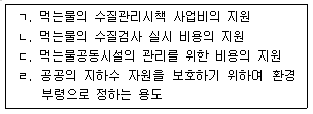
38. 수도법상 상수원보호구역 관리 및 상수원보호구역에 대한 수질관리계획에 관한 설명으로 옳지 않은 것은?
39. 수도법상 수도시설의 관리에 관한 설명으로 옳지 않은 것은?
40. 물환경보전법상 국가 물환경관리기본계획의 수립 주체와 수립 주기를 옳게 연결한 것은?
3과목: 설비운영(기계·장치 또는 계측기 등)
41. 약품 종류에 따른 약품저장설비의 재질 또는 보완대책을 짝지은 것으로 옳지 않은 것은?
42. 급속혼화시설 가운데 수류식 혼화장치에 관한 설명으로 옳지 않은 것은?
43. 침전지 슬러지 배출설비 중 슬러지 흡입방식에 관한 설명으로 옳은 것은?
44. 침전지의 슬러지 배출관에 관한 설명으로 옳은 것은?
45. 급속여과지의 역세척 설비 중 세척탱크에 관한 설명으로 옳은 것은?
46. 액화염소용 배관에 사용되는 재료로 옳지 않은 것은?
47. 다음 조건에서 가압탈수기의 소요대수(대)는?
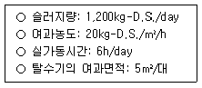
48. 3상 유도전동기에 속하는 것은?
49. 전동기에 관한 설명으로 옳은 것은?
50. 수ㆍ변전설비에 관한 설명으로 옳지 않은 것은?
51. 비접지계통의 영상전류는 무엇으로 검출하는가?
52. 변압기 병렬운전에 관한 설명으로 옳지 않은 것은?
53. 역률 85%(지상)인 300kW의 부하를 역률 95%(지상)로 개선하기 위한 콘덴서 용량(kVar)은 약 얼마인가?
54. 현장조작반이나 중앙관리실의 감시반 등에 배치되는 지시계 및 기록계의 방식과 그 동작원리의 연결이 옳지 않은 것은?
55. 관에 표준단극전위가 낮은 금속(Magnesium 등)을 양극으로 설치하고 양극과 관과의 전위차를 이용하여 이종금속전지를 형성시켜서 방식(防蝕)전류를 얻는 방법은?
56. 초음파유량계 측정방법 중 관내에 편류가 있을 경우 정밀도가 높은 측정방법은?
57. 수위 측정에 관한 설명으로 옳은 것은?
58. 유량계에 관한 설명으로 옳지 않은 것은?
59. 화학물질의 분류ㆍ표시 및 물질안전보건자료에 관한 기준상 물질안전보건자료의 작성원칙으로 옳은 것은?
60. 유해화학물질 실내 보관시설 설치 및 관리에 관한 고시상 기계에 의하여 하역하는 구조로 된 운반용기로서 금속제 용기, 플라스틱 내용기 부착의 용기, 경질플라스틱제의 용기 중 용적이 450리터 초과 3,000리터 이하인 용기의 기술기준에 관한 설명 으로 옳지 않은 것은?
4과목: 정수시설 수리학
61. 물의 성질에 관한 설명으로 옳지 않은 것은?
62. 개수로에서 유량측정을 위해 직각삼각형 예연위어를 사용하고 있다. 월류수심의 측정에 2%의 오차가 있다면 측정 유량에 발생하는 오차(%)는 얼마인가? (단, 위어의 유량계수는 상수이다.)
63. 상용관의 마찰손실계수를 산정하기 위해 사용되는 Moody 도표에 관한 설명으로 옳은 것은?
64. 그림과 같은 물탱크에서 수심(h)이 4m인 위치에 작은 오리피스가 설치되어 있다. 수면 위 공기층의 계기압력(p)을 30kPa로 유지시킬 때, 오리피스에서의 토출유속(m/s)은 약 얼마인가? (단, 오리피스의 유속계수는 0.7, 물의 밀도는 1,000kg/m3, 중력가속도는 9.8m/s2이다.)
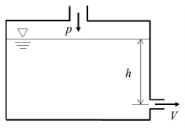
65. [MLT]계로 나타낸 물리량의 차원표시로 옳은 것을 모두 고른 것은?
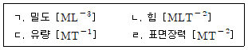
66. 흐름의 분류와 유동가시화(flow visualization)에 관한 설명으로 옳지 않은 것은?
67. 유량 0.3m3/s의 물이 수평관로를 가득 채운 상태로 일정하게 흐르고 있다. 상류측 관경이 400mm, 하류측 관경이 200mm이고 상류측 관로의 압력이 200kPa일 때, 하류측 관로의 압력(kPa)은 약 얼마인가? (단, 에너지손실은 무시하고 물의 밀도는 1,000kg/m3, 중력가속도는 9.8m/s2이다.)
68. 최적수리단면에 관한 설명으로 옳지 않은 것은?
69. 플록형성지에서 교반강도(G)에 관한 설명으로 옳지 않은 것은?
70. 개수로 흐름상태를 나타내는 프루드수(Froude number)에 관한 설명으로 옳은 것을 모두 고른 것은?
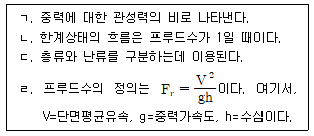
71. 관수로 흐름에서 발생하는 손실수두에 관한 설명으로 옳은 것은?
72. 직경 4m인 원통형 여과지의 하루 여과량이 2,000m3/d인데, 역세척은 매일 20L/m2/s로 5분 동안 실시할 때, 역세척수량(m3/d)은 약 얼마인가?
73. 길이 100m, 직경 20cm인 관을 통하여 5m3/min 의 물을 공급하고 있을 때, 발생하는 마찰손실수두(m)는 약 얼마인가? (단, 마찰손실계수는 0.015, 중력 가속도는 9.8m/s2이다.)
74. 직경 500mm인 관수로에서 물이 1,000m를 흐르는 동안 30m의 손실수두가 발생했다면 이 관로의 유량(m3/s)은 약 얼마인가? (단, Manning 공식을 따르고 조도계수는 0.012이다.)
75. 침전이론에서 자주 사용되는 스토크스(Stokes) 법칙에 관한 설명으로 옳은 것은?
76. 펌프의 용량과 대수 결정에 관한 설명으로 옳은 것을 모두 고른 것은?
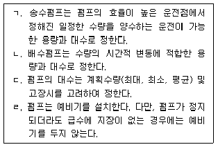
77. 펌프의 수격작용을 방지하기 위한 주된 방법 중 하나인 압력상승 경감방법으로 옳지 않은 것은?
78. 다음 ( )에 들어갈 내용으로 옳은 것은?
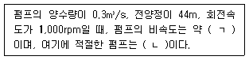
79. 효율이 85%, 동력이 9,500kW인 펌프를 이용하여 110m 위의 수조로 물을 양수할 때, 유량(m3/s)은 약 얼마인가? (단, 중력가속도는 9.8m/s2, 물의 단위중량은 1,000kgf/m3, 손실수두는 10m이다.)
80. 다음 조건의 모터 소요동력(kW)은 약 얼마인가? (단, 중력가속도는 9. m/s2, 물의 단위중량은 1,000kgf/m3이다.)
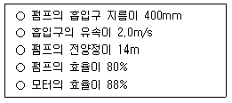